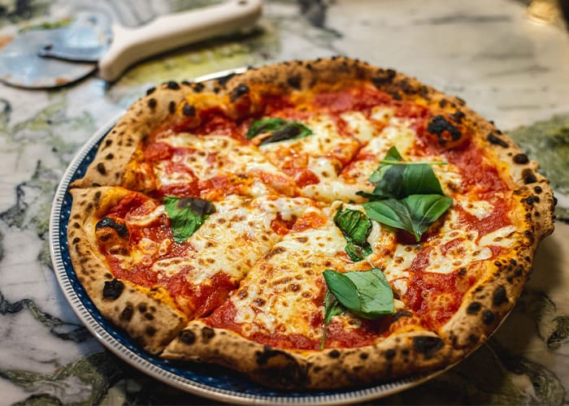
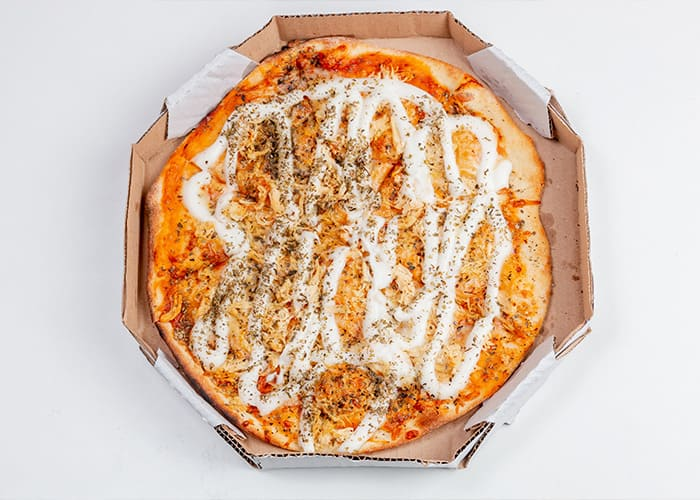

Calabresa
Recheio de queijo, molho de tomate, calabresa em rodelas, cebola, tomate picado, azeite e orégano. Azeitonas à gosto.

Napolitana
A receita original deste sabor leva tomate, azeite de oliva, orégano e alho. Inclusive, ela foi consagrada um Patrimônio Cultural da Humanidade pela Unesco em 2017.
Marguerita
É preparada com molho de tomate, manjericão, rodelas de tomate fresco, azeitona, queijo muçarela e orégano salpicado. A pizza fica uma delícia e a apresentação super linda!

Portuguesa
É feita com queijo, azeitona verde ou preta, ovo cozido, presunto cozido, cebola, ervilha, molho de tomate e azeite. Também há preparações que são acrescentadas milho verde, pimentão e orégano!

Frango com catupiry
A receita costuma levar basicamente queijo muçarela, frango, catupiry, sálvia e molho de tomate. Confesso que é uma das minhas preferidas!
Especial: Brigadeiro
Um clássico de origem brasileira, o brigadeiro é uma das pizzas mais pedidas e populares.